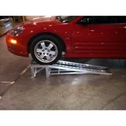
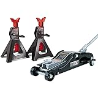

Step 1 Lifting the car in the air

the most simple and easy way to get the car off the ground is using ramps. simply make sure you are on level ground place the ramps down in front of the two front tires and drive up. It helps to have a friend to tell you when to stop pulling forward but you should be able to tell when you are on the ramps. when you are on top of the ramps before you let your foot off the break set the emergancy break this will prevent the car from rolling back off the ramps. Cars lower to the ground will require you to buy low profile ramps which is the same as regular ramps howerver they are not as steep which allows your front bumper to clear it.
If you want to do more than oil changes to your car in the future, I Recomend getting a set of jackstands and a floor jack. This will let you get the tires completly off the ground giving you access to the breaks, shocks, and everything else in the wheel well, but that is for another time. Your cars owners manual will show the jack points where you can slide the jack uner your car in order to lift it. Once you have one side lifted, slowley lower it back down on to a jackstand(refer to owners manual for proper placement) then repeat on the other side. once the front is in the air carfully get inside your car and set the emergancy break. Once set get out of your car and try to shake it. Just to make sure the car will stay in place on the stands.
Once you can get under your car move on to the next page
